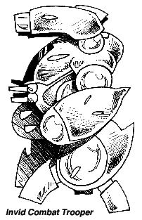
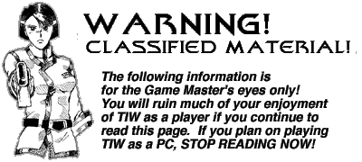

When the Third Invid War first began, the new Invid occupation army used the exact same mecha and tactics as the Regis' orginal troops did. This was a boon to the resistance fighters, as most of them had fought the same Invid mecha during the First and Second Invid Wars and thus knew their weaknesses. The lack of originality of the Invid during the first months of the war led to several major victories for the Earth resistance, and people began to believe that the new conflict would soon be over. However, the Invid's superior numbers of mecha combined with a lack of supplies and support for the REF caused the war to drag on.
 The predictability of the Invid started to change in early 2043. The first new Invid mecha that appeared were highly experimental units, largely inspired by ex-EBSIS engineers who had decided to work for the Invid. These mecha were never deployed in large numbers and usually operated only in conjunction with Invid-sponsored EBSIS strike forces. The most radical of these experimental mecha was the Kurgatch I-K Mobile Sonic Cannon, a 200-foot-tall man-shaped mecha with an experimental sonic cannon as its main weapon. The MSC was destroyed in Los Angeles by the California Freedom League in the summer of '43. No other MSCs were ever constructed. (NOTE: The stats for the mecha mentioned above can be found in the Robotech RPG supplement LANCER'S ROCKERS)
After the destruction of the MSC the Invid seemed to return to their traditional tactics for several months. Then, in late 2043 new mecha designs began to appear in North America, replacing and phasing out the older standard units that had been used until now. The first new mecha design to appear was the Attack Scout, a revamped version of the standard Invid Scout mecha that was faster, stronger, and DEADLIER than its predecessors. The Attack Scout was quickly accompanied by the Combat Trooper and Strike Unit, also obvious upgrades to the older Shock Trooper and Pincer Command Unit designs, respectively. Unlike the earlier Krugatch mecha, these new designs did not seem to have any human influence, and were deployed in large numbers very quickly around the globe. The tactics used by the Invid changed along with the mecha designs; the new Invid seemed smarter and sneakier than their predecessors, even though examination of destroyed mecha by resistance fighters revealed they were being piloted by the same types of organic beings. The invid seemed to have rapidly learned the arts of deception and subtlety, and were using them to the fullest effect possible.
These new mecha designs were the primary reason for the rapid decline of the terran resistance in late 2043 / early 2044. The new mecha and tactics came as a complete surprise to the resistance fighters, and many were eliminated before they could adapt, or even realize what was happening. Although new mecha from the REF forces at Tirol also began to arrive during 2044, the newly-operational Invid Space Hives made the availability of these mecha rare. The new mecha quickly made the humans realize that these invaders were NOT the same Invid that had invaded them before, and that there was a real possibility that the new opponents may win the Third Invid War.



 |
http://www.mcs.net/~deitrich/index.html deitrich@mcs.net |
Last Updated: |